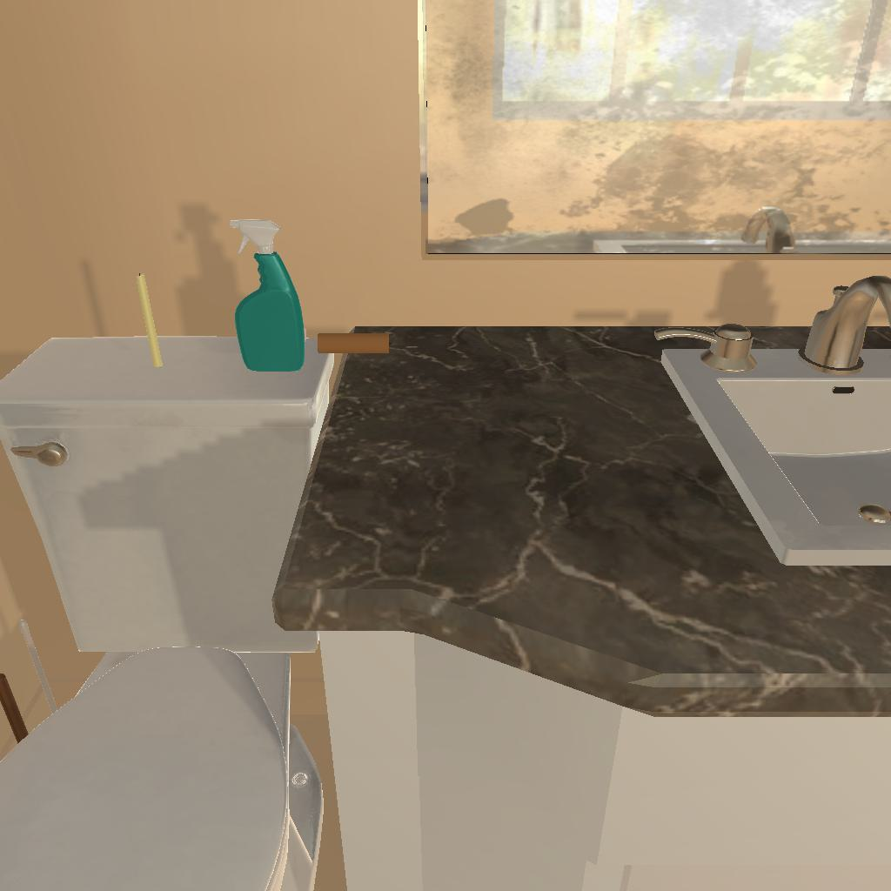

---------------------------------------------------------task: 11---------------------------------------------------------
--------------------------------------------------------------------------------------------------------------------------------------------------------------------
--------------------------------------------------------------------------------------------------------------------------------------------------------------------
Step:--------------------------------------------------------------------------1-------------------------------------------------------------------------------
----------------------------------------
VLM Prompt:
Image1:
Image2:
**Instruction**
1. Analyze the provided images to identify all visible household objects and compare the difference between images (e.h. whether the object is opened or not and taken on hand or not), focusing on those relevant to the task description "put a clean soapbar in bathtubbasin."
2. Use the analysis of images and the task hint "The agent must find an object of the desired type, pick it up, go to a sink or a basin, clean the object with a sink or basin, and then find the correct location to place it and put it down there. The agent does not need to use soap bottle or faucet to clean the object, and the agent just needs to do action that is "clean the object with the sink or sink basin"." to answer the question: what is the most reasonable action in the choices for the task description "put a clean soapbar in bathtubbasin"?
3. Decide and write the answer using the template: The answer is: (i): , where i is the real number. If there is no desired object in images, search every place based on **Initial Observation** to find the object. And if no one is exactly correct, choose a similar answer.
**Initial Observation**
You are in the middle of a room. Looking quickly around you, you can see bathtub (1), bathtubbasin (1), toilet (1), cabinet (1-2), countertop (1), sink (1), sinkbasin (1), garbagecan (1)
**Answer Choices**
(1): go to bathtub 1
(2): go to bathtubbasin 1
(3): go to toilet 1
(4): go to cabinet 1
(5): go to countertop 1
(6): go to sink 1
(7): go to sinkbasin 1
(8): go to cabinet 2
(9): go to garbagecan 1
**Answer**
Let's think step by step by following the instructions.
----------------------------------------
----------------------------------------
Original Response:
Firstly, we analyze the images provided:
In both images, we can see the same objects: a spray bottle on top of the toilet, a toothbrush, and a faucet on the sink. There doesn't seem to be any significant difference between the two images, such as objects being opened or taken into hand. Importantly, we do not see a soap bar in either image.
Given the task description "put a clean soapbar in bathtubbasin," we need to find a soap bar, clean it, and then place it in the bathtub basin. The hint suggests that the agent does not need to use a soap bottle or faucet to clean the object; the action is simply "clean the object with the sink or sink basin."
Considering the **Initial Observation** and the fact that no soap bar is visible in the images, the agent must search for a soap bar. The most likely places to find a soap bar would be in a cabinet or on a countertop.
Based on the provided answer choices and the task at hand, the most reasonable action would be to first find a soap bar. Therefore, the agent should check the cabinet where a soap bar is likely to be stored.
The answer is: (4): go to cabinet 1.
----------------------------------------
----------------------------------------
>>> Refine Original VLM Response and Get Pure Action: go to cabinet 1
----------------------------------------
-----------------------------------------------------------------
Running time: 11.46250867843628 seconds
Total Money: 5.555380000000005
-----------------------------------------------------------------
-----------------------------------------------------------------
Text Observation:You arrive at loc 3. The cabinet 1 is closed.
-----------------------------------------------------------------
UNSUCCEED